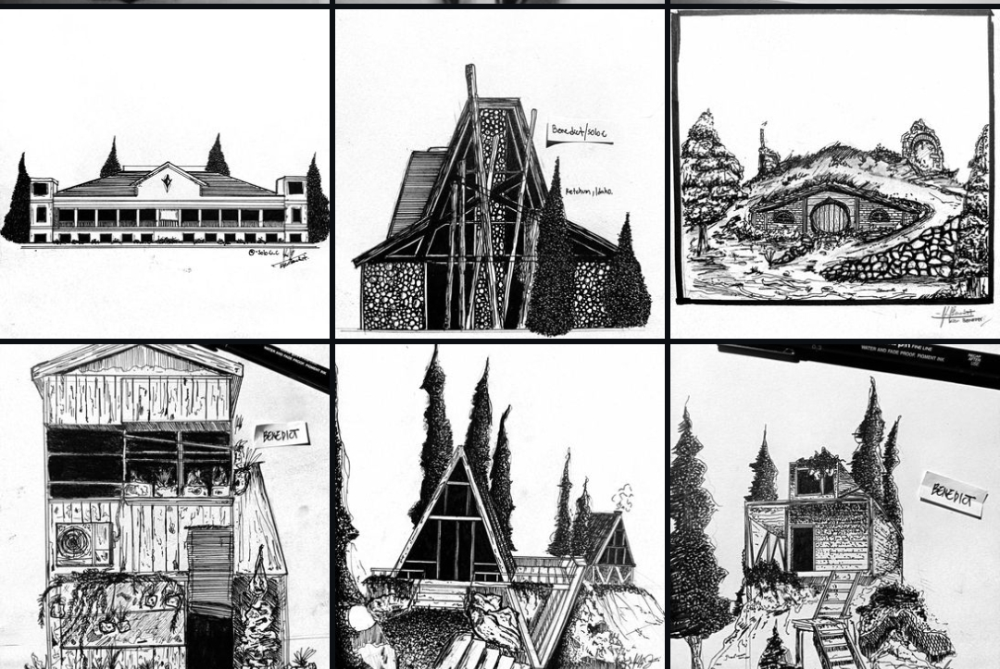
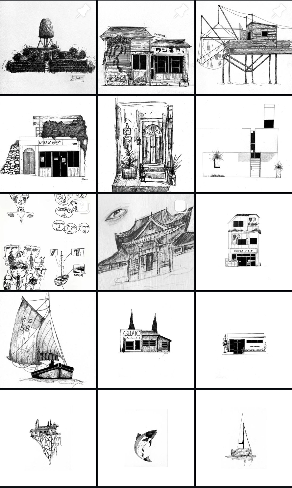
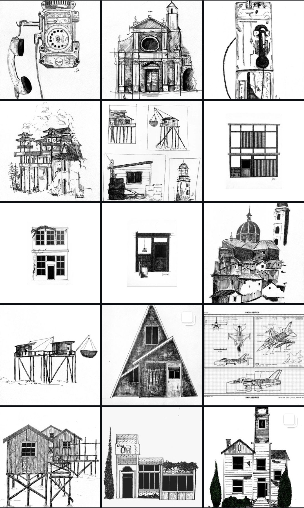

Architectural Ink Studies
Six hand-drawn pen-and-ink architectural vignettes exploring A-frame lodges, subterranean turf homes, rustic shacks, and clifftop retreats.
Hand-drawn architectural ink studies, structural linework, and curated sketchbook archives.

Six hand-drawn pen-and-ink architectural vignettes exploring A-frame lodges, subterranean turf homes, rustic shacks, and clifftop retreats.

15-piece sketchbook collection exploring Japanese storefronts, stone fortifications, seaside cafes, and minimalist structures.

15-piece archival plate featuring vintage rotary telephones, baroque cathedrals, Italian hill villages, and fighter jet blueprint drafts.